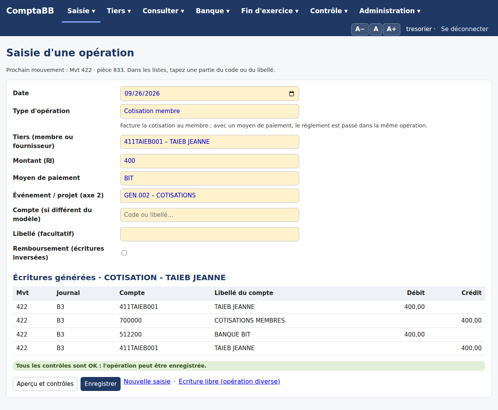
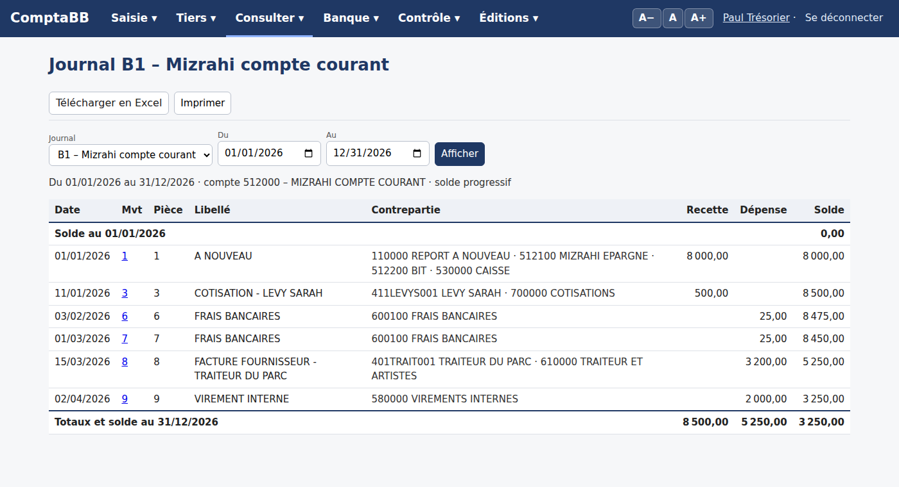

ComptaBB est une application web qui tient la comptabilité en shekels de la Loge : saisie guidée, fiches des bénévoles, tiers et membres,
rapprochement bancaire, journaux, états annuels et clôture. Elle s'ouvre depuis un ordinateur, une tablette ou un téléphone, et remplace le classeur Excel.
Mouvements repris421
Lignes d'écritures1 544
Débit = crédit1 451 040,66 ₪
Tests automatiques56
Ce que fait ComptaBB
Une seule base, partagée par tous, remplace le classeur et les fichiers envoyés par e-mail : chacun voit les mêmes chiffres à jour.
Saisir sans être comptable : on choisit un type d'opération (cotisation, don, facture, frais, virement, carte Isracard…) et l'application génère les écritures équilibrées ; écriture libre, modification ou annulation par écriture inverse restent possibles, avec motif et trace.
Faire participer les bénévoles : chacun note en ligne les recettes et dépenses de son activité ; le trésorier complète et reporte.
Suivre les tiers : membres, fournisseurs et autres, avec adresse ; import d'un fichier Tiers.xlsx ; solde dû, cotisations, lettrage.
Rapprocher la banque : import du relevé Mizrahi (PDF en hébreu), pointage automatique, état de rapprochement.
Tenir les journaux : banque et caisse avec solde progressif, imprimables et exportables en Excel.
Produire les états et clôturer : compte de résultat, bilan, budget, comparaison avec l'année précédente, à-nouveaux, archive figée.

Saisie guidée : aperçu des écritures et contrôles.

Journal de banque avec solde progressif.
Qui fait quoi
Rôle
Ce qu'il fait
Ce qu'il voit
Administrateur
Tout, dont le paramétrage de base, les utilisateurs et la base de données
Tout
Trésorier
Saisie, corrections, codes d'axe 2, tiers, fiches, rapprochement, budget, clôture, sauvegardes (pas le paramétrage de base)
Tout
Bureau
Consultation seule
Tableau de bord, écritures, journaux, états, tiers, rapprochement
Bénévole
Note les lignes de ses fiches, crée des tiers provisoires, transmet
Seulement ses fiches, ni soldes ni écritures
Fonctionnalités
Les pages sont rangées en sept menus ; dans toutes les listes, on cherche en tapant une partie du code ou du libellé, et les tableaux se trient d'un clic sur l'en-tête.
Menu
Ce qu'on y fait
Saisie
Saisie guidée (aperçu et 11 contrôles), écriture libre, modification d'une écriture rappelée par son numéro, codes analytiques et nouveaux tiers, fiches bénévoles
Tiers
Liste et fiches (adresse, CP, ville), import Tiers.xlsx, solde, cotisations et taux de recouvrement, lettrage, tiers provisoires
Consulter
Tableau de bord, écritures, journaux de banque et de caisse, grand livre, balance, analytique
Banque
Import du relevé, traductions, pointage automatique et manuel, écriture créée depuis le relevé, écart par mois
Fin d'exercice
Compte de résultat, bilan, budget et réalisé, année N et N-1 ; clôture avec à-nouveaux et archive Excel
Contrôle
État des règles comptables ; historique de toutes les actions (recherche, Excel)
Administration
Référentiels et utilisateurs ; base de données : sauvegardes, restauration, remise à zéro et reprise du classeur
Icône sur le Bureau : Edge › … › Applications › Installer ce site en tant qu'application ; Chrome › ⋮ › Caster, enregistrer et partager › Installer la page en tant qu'application.
Les boutons A− A A+ en haut à droite règlent la taille des caractères, mémorisée sur chaque appareil.
Un nouvel utilisateur reçoit son compte de l'administrateur (Administration › Utilisateurs ; un bénévole : Fiches bénévoles › Nouveau bénévole, parmi les membres).
L'hébergement est en essai gratuit chez PythonAnywhere ; s'il convient, l'offre payante coûte environ 5 $ par mois, sans engagement.
Les mises à jour se font en une commande, avec sauvegarde automatique et retour arrière possible (protocole PDF).
Garde-fous
Chaque mouvement est équilibré (débit = crédit) et chaque ligne porte soit un débit, soit un crédit.
Comptes, journaux et codes doivent exister ; la date doit tomber dans l'exercice ouvert ; un exercice clôturé est verrouillé.
Une correction exige un motif ; l'avant et l'après sont gardés ; une écriture se modifie en la rappelant par son numéro ; une erreur d'un exercice clos se corrige par une écriture libre dans l'exercice ouvert.
L'historique note qui a fait quoi et quand ; son effacement laisse une copie Excel et une trace.
Connexion chiffrée (HTTPS), mot de passe par personne, droits selon le rôle.
Sauvegardes à chaque mise à jour, chaque nuit et à la demande ; téléchargement mensuel conseillé ; archive Excel figée à chaque clôture.
Points en suspens
Tester l'application avec le trésorier, le bureau et un bénévole, puis décider de garder l'hébergement.
Activer la sauvegarde automatique de nuit (PythonAnywhere › Tasks).
Importer le vrai relevé Mizrahi (tnuot.pdf) et vérifier la lecture.
Importer les coordonnées des tiers (Tiers.xlsx) et la cotisation attendue des membres.
Expliquer l'écart Banque 1 de 2 910,00 ₪ (Mvt 285 et 177, mis en attente).
Solder le compte de virements internes 580000 (149 655,84 ₪).
Vérifier les soldes d'ouverture de la caisse et de BIT (BIT créditeur de 1 590,50 ₪).
Affecter le résultat de l'exercice court 2025 (+6 678,60 ₪), repris à la clôture 2026.
Documents associés : mode d'emploi détaillé (PDF, 28 pages) · protocole de mise à jour (PDF).